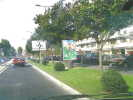
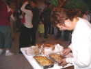
Vendredi soir, c'est le traditionnel pique-nique : l'organisation fournit à boire (Chinon, par exemple...) et pas mal à manger, et chacun apporte les spécialités de son terroir... Les dames ont souvent préparé beaucoup de gâteries !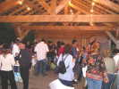
Ca fait une belle soirée de discussion sous la grange en bois qui jouxte les jardins...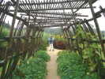
Dans la nuit, il tombe des cordes, et les campings-cars sont inquiets pour leur départ dans la terre ameublie... Samedi matin, pas un poil de vent, c'est le moment de visiter les jardins...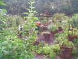
Il y en a de toutes les formes et de toutes les plantes, avec de petites pancartes pour expliquer ou pour indiquer le nom de la chose...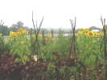
Je trouve que les jardins sont peut-être moins "artistes", "créatifs" mais mieux tenus cette année, ils avaient été un peu négligés en fin de saison l'année dernière !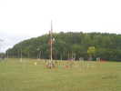
Côté cerfs-volants, autant le dire ce ne sera pas très riche aujourd'hui, je ferai voler ma raie indoor en compagnie de quelques oiseaux de R-Sky et ce sera tout ! Alors, un petit tour dans les autres jardins, ceux des éoliens...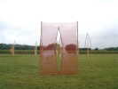
Didier a disposé autrement ses arcs et étamines pour créer une "vue" imposée...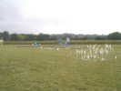
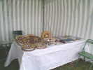
Un Allemand est venu présenter son éducatif de fabrication d'enrouleurs, avec tous les stades, que nous avions vu plus complètement à Brie-Comte-Robert.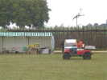
Cette année, l'organisation dispose de 2 véhicules électriques bien pratiques pour se déplacer ou charrier du matériel sur le terrain sans l'abîmer et sans polluer !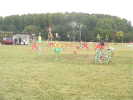
Bien sûr, Fernando a monté ses cactus sans cesse remodelés, devant le JdV de CDs de François. Ils auront droit à un petit éclairage nocturne ce soir...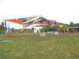
Michel a monté ses immenses velums colorés qui créent un ensemble splendide...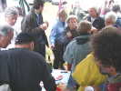
Bon, inutile de persister à vouloir voler, apéritif dans le village des campings-cars...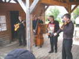
Bon, il faut arrêter l'apéritif des campings-cars si on ne veut pas être en retard à l'apéritif de l'Agence-du-Vent ! Un très bon orchestre va animer la soirée, avec une coloration Stéphane Grapelli-Django Reinhardt, mais s'adaptant à tous les genres...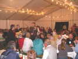
Les musiciens ont aussi accompagné le repas, jouant pour tous ou table par table. Repas sympathique et excellent, d'autant qu'une surprise était promise après, comme toujours !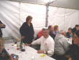
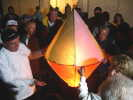
La surprise, à la sortie de la salle, une montgolfière en papier va prendre son essor. Miracle fragile, et magie des éclairages...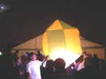
Une montgolfière, que dis-je, plein de montgolfières ! Une plus grosse, déjà, plus sphérique donc plus efficace...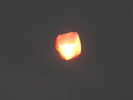
Et elle monte sans problème, jusqu'à perte de vue !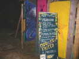
Pour poursuivre la demo, on va rejoindre à travers la nuit la nouvelle salle, en passant devant les toilettes écologiques à la sciure...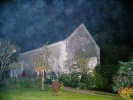
Ce beau bâtiment ancien a été rénové et aménagé pour nous (entre autres) accueillir ce soir...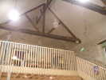
A l'intérieur, une loggia où sera projeté le film sur les incroyables montgolfières brésiliennes (60 m de haut, en papier !) et des séquences sur le voyage en France d'un Brésilien qui lâche des montgolfières partout où il passe, par exemple face à la Tour Eiffel !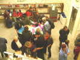
En bas, deux grandes tables de travail : la première pour découper et coller des ballons...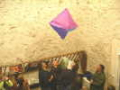
Christophe a fini le sien et le fait voler en indoor avec un pistolet à air chaud...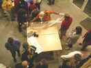
La deuxième table pour confectionner les brûleurs à base de papier essuie-tout roulé et imprégné de paraffine, le tout amarré avec du fil de fer...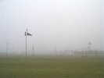
Après une courte nuit, dimanche matin, réveil peu enthousiasmant : le brouillard a envahi la Gloriette et le vent, bien entendu, l'a désertée !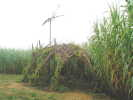
La pittoresque cabane avec son oiseau menaçant paraît très fantomatique dès qu'on s'en éloigne !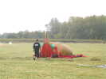
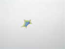
De temps en temps, un souffle, une risée. Un Pentagone en profite pour s'élancer, mais ça ne dure guère en début de journée...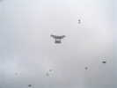
Sur une risée qui se prolonge, pas mal de cerfs-volants montent, tous très légers. Le Saconney de JP vole, mais ne restera pas longtemps en l'air...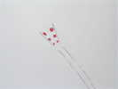
Ce joli cerf-volant, d'inspiration un peu cottansienne tient bien l'air, lui, malgré sa faible surface portante !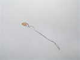
Ce joli cerf-volant vole depuis peu, et est très agréable à regarder. Sa conception ne doit pas être si simple, je n'ai pas regardé de près, bambou, peut-être ?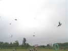
Au fil de la journée, le brouillard monte un peu et les risées seront plus longues. Les cerfs-volants se font aussitôt plus nombreux et plus variés, après les vagues initiales de Rollers...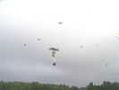
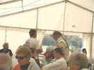
Déjeuner toujours sous la tente. Ludo a amené de petits hélicos (25 Euros, c'est pas cher !) sommairement télécommandés et Michel s'amuse à en prendre un en main sur la tête des convives...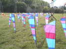
Retour sur le terrain, Michel Mauguen a planté son JdV de bannières strippées !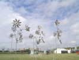
Vu le vent, Joël a planté ses moulinets de plumes, les autres demandent une brise plus soutenue...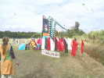
Le camp de Turbulences a tout d'un JdV! Je dois aussi une fière chandelle à Hurricane : Pour aller déjeuner, j'avais attaché mon Harfang à un pylône et leur Président a croisé des gens du voyage qui partaient avec. Ils le lui ont remis sans histoire : "on l'a trouvé dans un arbre, on le rapportait...". Ouais, merci !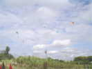
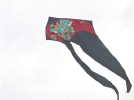
Sylvie peut mettre aussi en l'air son pyrodelta, plus lourd que le Genki...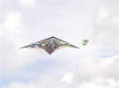
Et Arnold fait voler son delta obtus (ce n'est pas une critique, au contraire, je salue l'audace !)...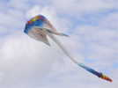
L'immense flow-form de Michel a pu aussi se déployer, au moins un certain temps !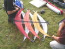
J'ai pris cette photo du cerf-volant en arcs croisés car quelqu'un (je ne sais plus qui...) m'a demandé comment c'était fait, derrière !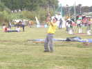
Les Pirates ont continué les initiations à la Nasa. J'ai fait une petite séance de renouvellement, et Patrick s'y est mis aussi...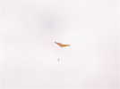
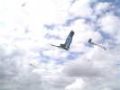
Jean-Claude a réussi à élever quelques secondes son splendide et immense oiseau...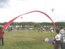
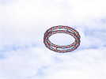
Le vent monte encore un peu et devient stable en fin d'après-midi, avec l'ensoleillement. Les roues montent...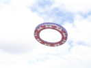
Thierry sort une roue mixte où le haut a été remplacé par du bleu... On verra aussi celle de Claude Bova...